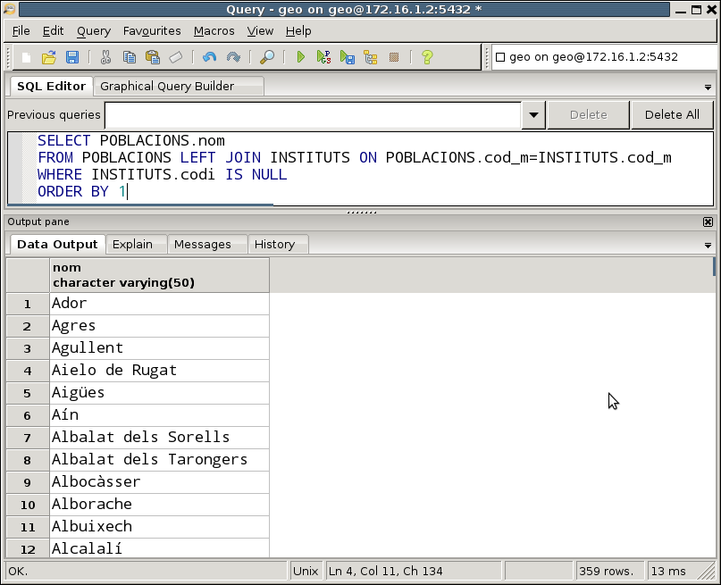

2.2.3 Combinació externa
En ocasions ens interessarà fer una combinació diferent. Com quasi sempre ens basarem en un exemple. Quan en un exemple del punt anterior traíem els nom de les poblacions amb el nom dels instituts, no podien eixir les poblacions que no tenen instituts. Ara ens plantejarem la possibilitat de traure totes les poblacions, fins i tot aquelles que no tenen instituts, però d'aquelles que sí que en tinguen traure també el nom dels instituts. Aquesta operació s'anomena COMBINACIÓ EXTERNA.
Sintaxi
Tindrem dues possibilitats: traure totes les de l'esquerra o traure totes les de la dreta.
Per a traure TOTES les files de la taula de l'esquerra, i aquelles que estiguen relacionades de la de la dreta:
SELECT ...
FROM taula1 LEFT [OUTER] JOIN taula2 ON condició
Així traurem TOTES les files de taula1, i aquelles que estiguen relacionades de taula2.
Per a fer-ho al revès, és a dir, totes les files de la taula de la dreta i aquelles files que estiguen relacionades de l'esquerra:
SELECT ...
FROM taula1 RIGHT [OUTER] JOIN taula2 ON condició
D'aquesta manera traurem TOTES les files de taula2, i aquelles que estiguen relacionades de taula1.
En el nostre exemple:
SELECT POBLACIONS.nom,INSTITUTS.nom
FROM POBLACIONS LEFT JOIN INSTITUTS ON POBLACIONS.cod_m=INSTITUTS.cod_m
ORDER BY 1
on hem ordenat pel nom de la població per a una millor lectura, i ens donarà el següent resultat:

Podem observar que ens trau fins i tot els pobles que no tenen instituts, i que en el camp nom de l'institut tenen el valor NULL.
Fem una variant interessant. Anem a traure els pobles amb el nombre d'instituts que té cadascun. Ens farà falta la taula POBLACIONS per a poder traure el nom de la població i la taula INSTITUTS per a traure el nombre d'instituts, i agruparem pel nom de la població. Les dues taules les hem de combinar (per evitar el producte cartesià). Si fem una combinació normal (interna), els que no tenen instituts no entren. Però si fem una combinació externa sí que entraran.
Només ens queda comptar per un camp que en el cas dels que no tenen instituts tinga el valor nul, és a dir, per un camp de la taula INSTITUTS, i el que millor se'ns acopla és algun que forma part de la clau principal, ja que com no pot agafar un valor nul en la taula INSTITUTS, l'única possibilitat que agafe el valor nul en la combinació externa és que la població no tinga institut, i aleshores en el moment de comptar ens donarà el valor 0.
Aquesta serà la consulta, on hem tornat a ordenar pel nom de la població
SELECT POBLACIONS.nom,COUNT(INSTITUTS.codi)
FROM POBLACIONS LEFT JOIN INSTITUTS ON POBLACIONS.cod_m=INSTITUTS.cod_m
GROUP BY POBLACIONS.nom
ORDER BY 1
I aquest serà el resultat
Una altra variant també interessant és fer una consulta similar per a traure els pobles que no tenen institut. Haurem de fer una combinació externa, i en la condició posar justament que un dels camps de la taula INSTITUTS siga nul (per exemple, la clau principal):
Aquesta serà la consulta, on hem tornat a ordenar pel nom de la població:
SELECT POBLACIONS.nom
FROM POBLACIONS LEFT JOIN INSTITUTS ON POBLACIONS.cod_m=INSTITUTS.cod_m
WHERE INSTITUTS.codi IS NULL
ORDER BY 1
I aquest serà el resultat:

Exemples
-
Traure totes les comarques amb el número de pobles que té cadascuna, fins i tot aquelles comarques que no tinguen cap poble.
Aquest exemple és poc il·lustratiu, perquè no tenim en principi cap camarca que no tinga pobles. De tota manera, la manera seria fent un LEFT JOIN entre COMARQUES i POBLACIONS, per a després agrupar per comarca i comptar les poblacions. Observeu com també podem utilitzar la sintaxi del USING en el LEFT JOIN.
SELECT COMARQUES.nom_c, COUNT(cod_m)
FROM COMARQUES LEFT JOIN POBLACIONS USING(nom_c)
GROUP BY COMARQUES.nom_c
ORDER BY 1;
Llicenciat sota la Llicència Creative Commons Reconeixement NoComercial SenseObraDerivada 2.5